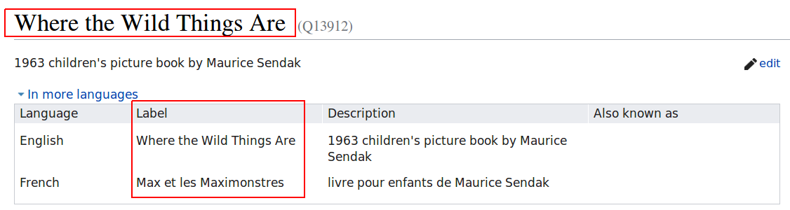
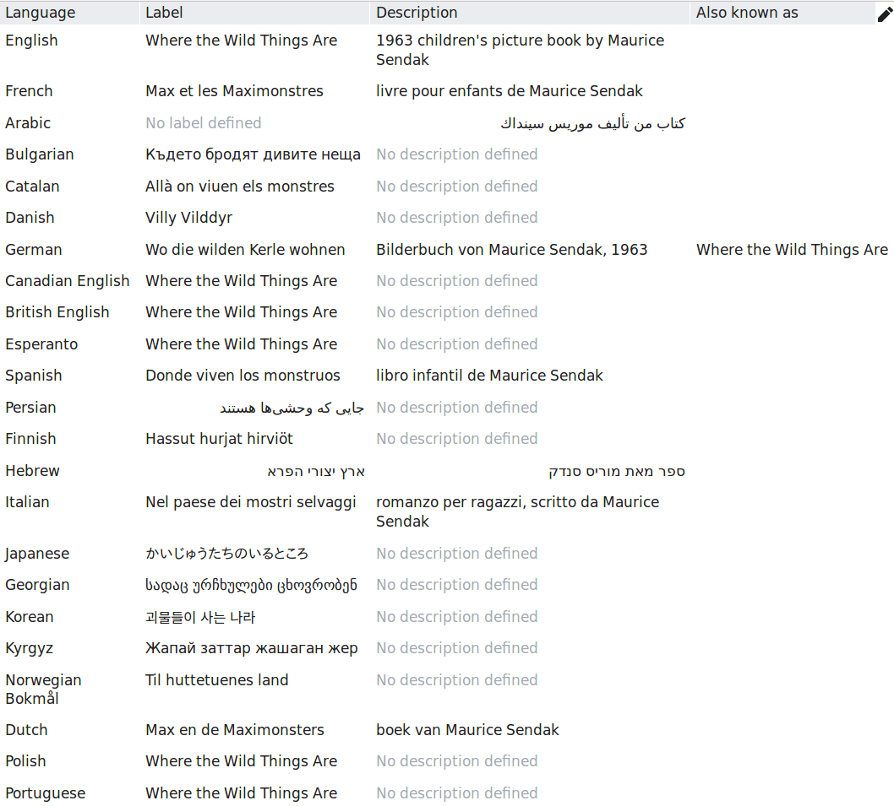
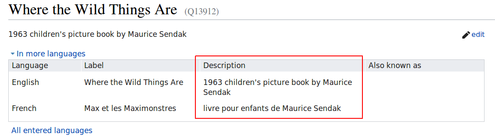
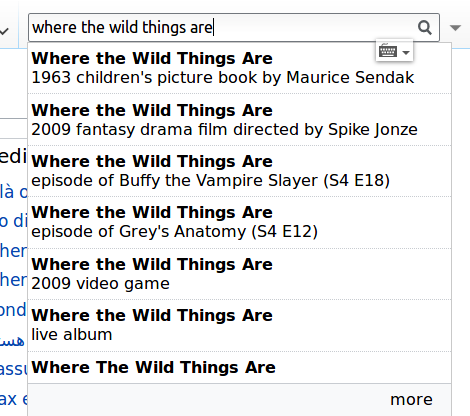
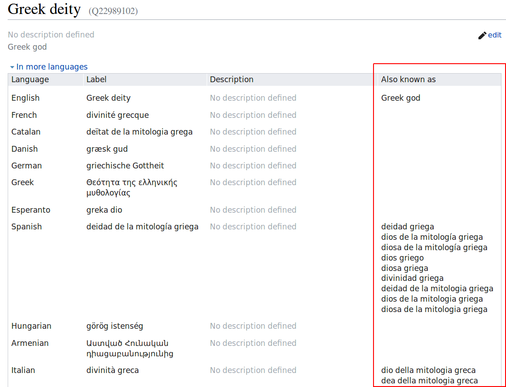
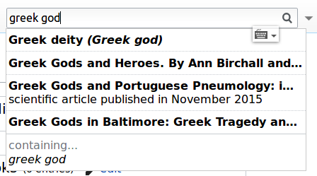
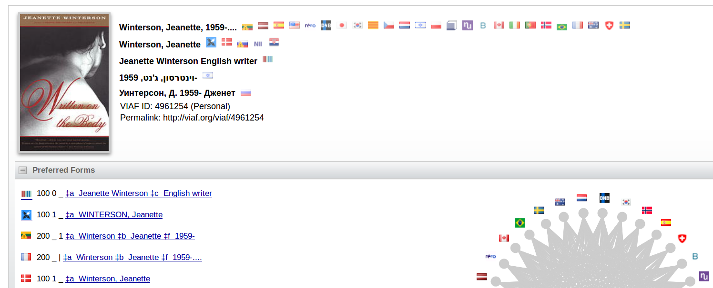

Created: 2019-03-05 Tue 23:44
Wikidata is a free and open knowledge base that can be read and edited by both humans and machines. Wikidata acts as central storage for the structured data of its Wikimedia sister projects including Wikipedia, Wikivoyage, Wikisource, and others.
Wikidata also provides support to many other sites and services beyond just Wikimedia projects! The content of Wikidata is available under a free license, exported using standard formats, and can be interlinked to other open data sets on the linked data web. --Wikidata home page
See also: Wikidata introduction
Wikibase is the software application under Wikidata.
| Wikipedia | <- | MediaWiki | -> | UNC Libraries Staff Wiki |
| Wikidata | <- | Wikibase | -> | (UNC Libraries Linked Data portal?) |
Classic linked data concept: TRIPLES
| Subject | Predicate | Object |
| owi:297853 | rdaw:P10256 | lcsh:sh2008107935 |
| Where the wild things are | has subject | Monsters–Fiction |
The Wikidata version: CLAIMS
| Item | Property | Value |
| Q13912 | P921 | Q276453 |
| Where the wild things are | main subject | monster |
Items are the things/concepts described.
Anyone can create an item.

Multilingual





All of the following are statements:
Look at item: Jeanette Winterson (Q233584)

Properties describe the relationships between items.
New properties must go through a proposal process. (See all open proposals)
Look at property: author (P50)
Example: Instance of work (or any of its subclasses) where author is Jeanette Winterson
Check out the examples and the help!
This presentation heavily cribbed from: